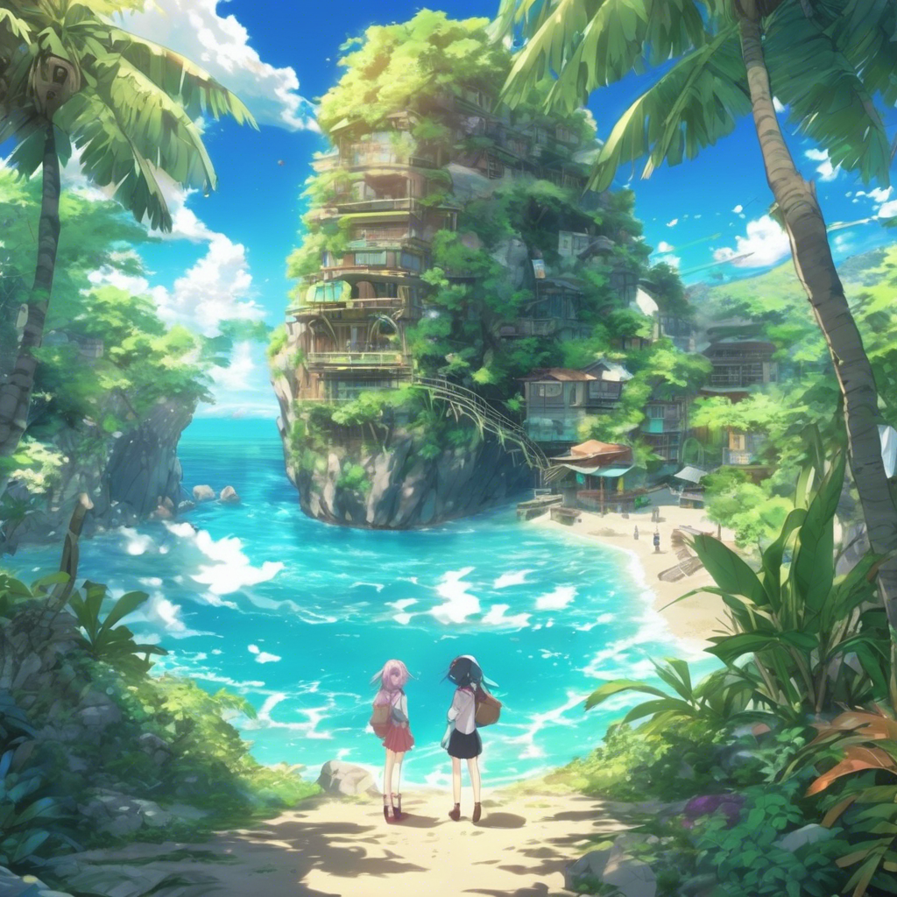
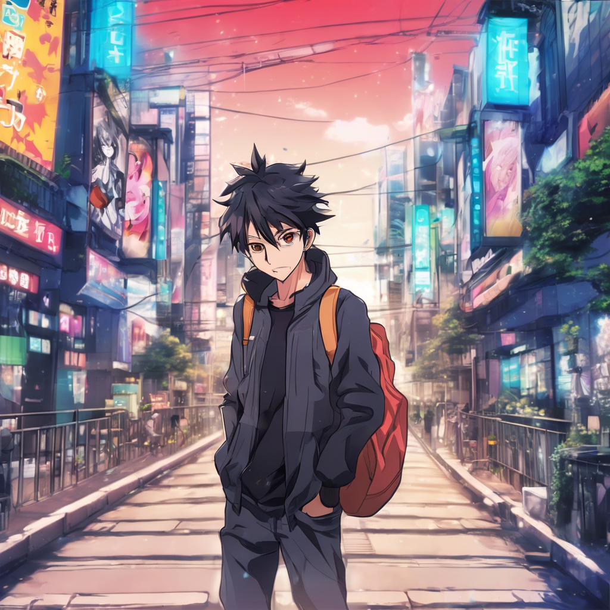

SICK NEW IDEA ALERT, BRO!
I've been VIBIN' with this: "Digital Detox Islands"

Imagine Eco-Friendly, Tech-Free Resorts where you can finally escape the endless scroll and embrace the REAL world.
Here's the Lowdown, BRO:
- No Wi-Fi, No Phones Allowed: That's right, delete Facebook from your brain. (Except for a community phone for emergencies because we're not TOTAL savages.)
- AI-Powered, Invisible Staff: Drones bringing you coconuts? Automated systems fluffing your pillow? We're talking minimal human interaction to maintain that pure, untainted tech-free vibe for guests. It's like magic, but smarter.
- Mindfulness & Skill-Building Workshops: Get in touch with your inner peace AND learn something cool. Meditation, woodworking, astronomy, interpretive dance... whatever helps you remember what your hands are for!
- Biometric Feedback Loops: Wearables that track your stress levels, sleep quality, and maybe even how much fun you're having. It helps manage your detox progress and proves to your boss you were *actually* relaxing.
- "Re-Entry" Programs: Because diving back into the digital abyss without a plan is dangerous, BRO. We'll ease you back in gently, like teaching a baby bird to tweet again.
THE HOOK, BRO: The Digital Pledge!
Upon arrival, you Surrender Your Devices for a "Digital Pledge" - a personalized, AI-generated contract predicting how much time you'll save and what epic feats you can achieve offline. Want to write a novel? Learn fluent Klingon? Build a sandcastle empire?
Beat the prediction, Win a Free Return Trip! It's literally a win-win situation. Either you detox successfully, or you get a free vacation later! Stonks!

*Actual AI-powered invisible staff may be slightly less invisible. Free return trip offer subject to AI prediction accuracy and your actual commitment level. Results may vary. Side effects may include increased happiness and reduced screen time headaches.
© 2023 Digital Detox Islands. All Rights Reserved. Probably.